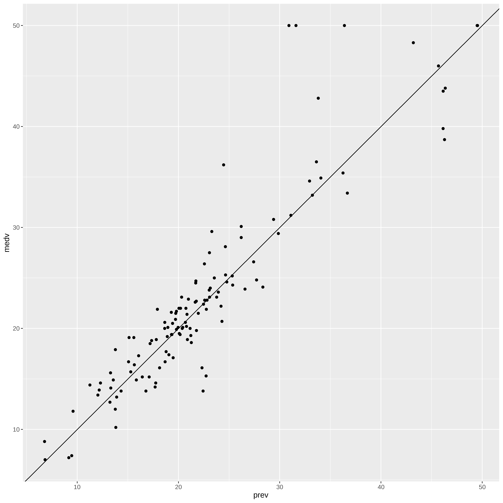

Arvores de Regressão - XGBoost
Bibliotecas
Avaliando, selecionando dados
Treino e Teste com todas as variáveis
## Vamos criar os conjuntos de treino teste e desenvolver a arvore
## com todas as variáveis.
library(caret)Carregando pacotes exigidos: lattice
Attaching package: 'caret'The following object is masked from 'package:purrr':
liftset.seed(21)
indice <- createDataPartition(dados$medv, times=1, p=0.75, list=FALSE)
conj_treino <- dados[indice,]
conj_teste <- dados[-indice,]
str(conj_treino)'data.frame': 381 obs. of 14 variables:
$ crim : num 0.00632 0.02729 0.03237 0.06905 0.02985 ...
$ zn : num 18 0 0 0 0 12.5 12.5 12.5 12.5 12.5 ...
$ indus : num 2.31 7.07 2.18 2.18 2.18 7.87 7.87 7.87 7.87 7.87 ...
$ chas : int 0 0 0 0 0 0 0 0 0 0 ...
$ nox : num 0.538 0.469 0.458 0.458 0.458 0.524 0.524 0.524 0.524 0.524 ...
$ rm : num 6.58 7.18 7 7.15 6.43 ...
$ age : num 65.2 61.1 45.8 54.2 58.7 66.6 96.1 100 94.3 39 ...
$ dis : num 4.09 4.97 6.06 6.06 6.06 ...
$ rad : int 1 2 3 3 3 5 5 5 5 5 ...
$ tax : num 296 242 222 222 222 311 311 311 311 311 ...
$ ptratio: num 15.3 17.8 18.7 18.7 18.7 15.2 15.2 15.2 15.2 15.2 ...
$ black : num 397 393 395 397 394 ...
$ lstat : num 4.98 4.03 2.94 5.33 5.21 ...
$ medv : num 24 34.7 33.4 36.2 28.7 22.9 27.1 16.5 15 21.7 ...str(conj_teste)'data.frame': 125 obs. of 14 variables:
$ crim : num 0.0273 0.17 0.1175 0.6274 0.8027 ...
$ zn : num 0 12.5 12.5 0 0 0 0 0 0 75 ...
$ indus : num 7.07 7.87 7.87 8.14 8.14 8.14 8.14 5.96 5.96 2.95 ...
$ chas : int 0 0 0 0 0 0 0 0 0 0 ...
$ nox : num 0.469 0.524 0.524 0.538 0.538 0.538 0.538 0.499 0.499 0.428 ...
$ rm : num 6.42 6 6.01 5.83 5.46 ...
$ age : num 78.9 85.9 82.9 56.5 36.6 91.7 82 61.4 30.2 21.8 ...
$ dis : num 4.97 6.59 6.23 4.5 3.8 ...
$ rad : int 2 5 5 4 4 4 4 5 5 3 ...
$ tax : num 242 311 311 307 307 307 307 279 279 252 ...
$ ptratio: num 17.8 15.2 15.2 21 21 21 21 19.2 19.2 18.3 ...
$ black : num 397 387 397 396 289 ...
$ lstat : num 9.14 17.1 13.27 8.47 11.69 ...
$ medv : num 21.6 18.9 18.9 19.9 20.2 15.2 13.2 20 24.7 30.8 ...Preparando os dados
x_treino <- model.matrix(medv ~ . , data = conj_treino)[, -1]
y_treino <- conj_treino$medv
x_teste <- model.matrix(medv ~ . , data = conj_teste)[, -1]
y_teste = conj_teste$medv1a tentativa Xgboost
Attaching package: 'xgboost'The following object is masked from 'package:dplyr':
sliceset.seed(21)
cv <- xgb.cv(data = as.matrix(x_treino), label = as.matrix(y_treino),
objective = "reg:squarederror", nrounds = 100, nfold = 5, eta = 0.3, max_depth = 6,
verbose = FALSE)
# cv
elog <- as.data.frame(cv$evaluation_log)
elog %>%
summarize(ntrees.train = which.min(train_rmse_mean), # find the index of min(train_rmse_mean)
ntrees.test = which.min(test_rmse_mean)) # find the index of min(test_rmse_mean) ntrees.train ntrees.test
1 100 39(nrounds <- which.min(elog$test_rmse_mean))[1] 39Modelo Final
Previsões
conj_teste$prev <- predict(modelo_xgb, as.matrix(x_teste))
ggplot(conj_teste, aes(x = prev, y = medv)) +
geom_point() +
geom_abline()